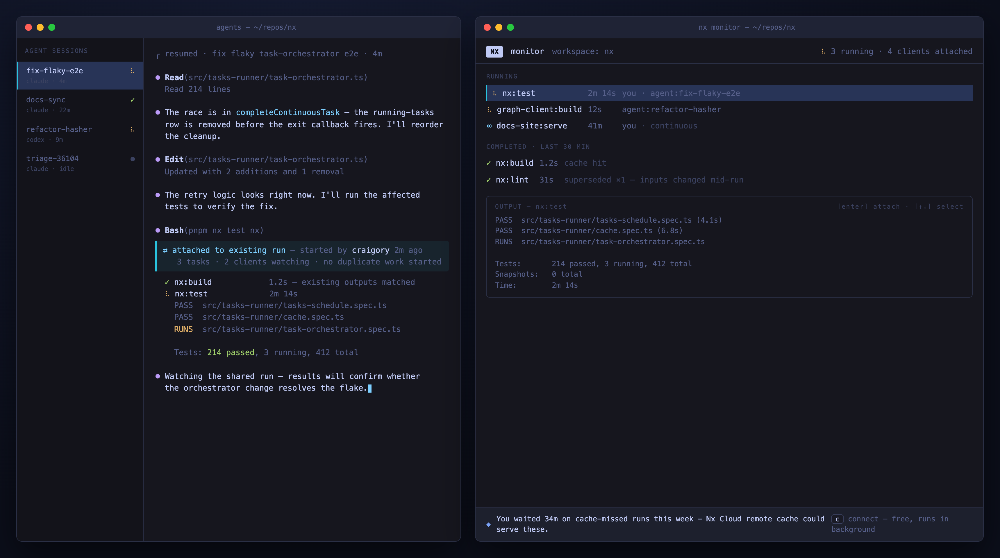
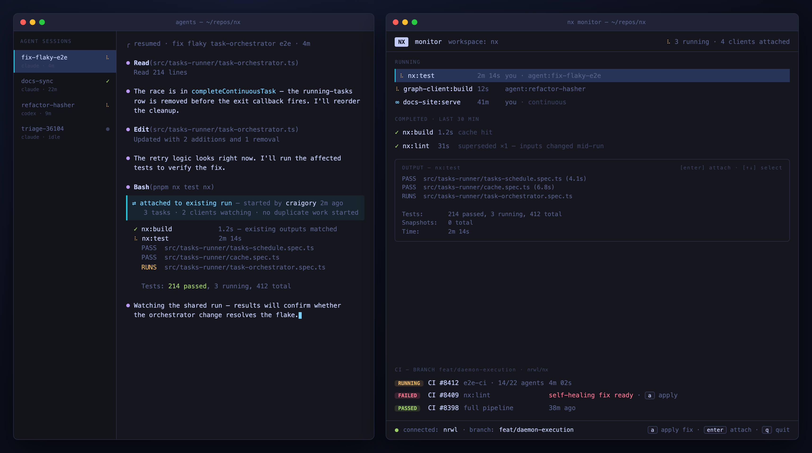

Proposal: Daemon-Hosted Task Execution
Draft for cycle planning · 2026-07-14 · Detail: PLAN.md · Research: research/
Problem
- Human + agents working in one repo duplicate each other's runs: an agent requesting
nx test nxmid-way through the dev's identical run burns the CPU twice for the same answer. - Continuous tasks are worse: the second invocation blocks on "waiting for task in another nx process" with no output access, and the dev server dies with whichever terminal started it.
- There is no way to see what's running in a workspace right now, or join it.
Root cause: a run is private memory inside whichever terminal process started it.
Proposal
I propose we move task execution into the daemon. The CLI becomes a client: submits run requests, attaches to executions, renders locally.
- Engine extracted to a host-agnostic library. Daemon hosts it locally; CLI process hosts it where the daemon is off (CI, docker). One codepath, two hosts.
- Task-level dedup: incoming runs attach to matching in-flight executions instead of duplicating. Stale executions get superseded (= rerun, for free).
- Refcounted attachment: Ctrl+C detaches; last detach kills. Solo-user behavior identical to today.
- IO over dedicated per-run sockets, snapshot-then-stream attach. The tmux model.
Alternatives considered
- Print "task is running in another process [pid]" + tee stdout to a file. Small lift, and agents could read the file for context. But it's read-only: no input, no results, no dedup of discrete tasks, and the dev server still dies with its owning terminal. Could ship independently as a stopgap for agents if we want a quick win, but it doesn't build toward anything.
- Wire retries/reruns into the current TUI. People have asked for this, and it scratches the rerun itch directly. But it's scoped to one invocation's lifetime — no help for a longer-lived surface — so it seems less like the way forward to me.
- Broker: runs stay in the CLI, register with the daemon. The cheapest "shared runs" design, and our fallback if the gate below fails. It can't deliver attach — PTY state is process-private and single-consumer, so every CLI would have to become an output-forwarding server: the executor's plumbing without its benefits.
Why now
- Default working mode is now human + N agents in one repo, blindly duplicating each other's runs. We hit this ourselves daily in nx.
- The primitives already exist in-repo: daemon, Rust PTY + vt100 parser, Rust TUI, input-aware task hashing, running-tasks registry. This is assembly, not greenfield.
- Nobody else has the surface (below). First mover defines expectations for the agent era.
Competitive gap
| Daemon execution | Interactive tasks | Multi-client attach | Shared human+agent runs | Monitor surface | Cloud product to feed | |
|---|---|---|---|---|---|---|
| Gradle | ✅ | ❌ | ❌ | ❌ | ❌ | partial |
| Bazel | ✅ | ❌ | ❌ (client lock) | ❌ | ❌ | ❌ |
| Buck2 | ✅ | ❌ | ❌ | ❌ | ❌ | ❌ |
| Turborepo | ❌ | ✅ | ❌ | ❌ | ❌ | partial |
| moon | ❌ | ❌ | ❌ | ❌ | ❌ | partial |
| Nx (this) | ✅ | ✅ | ✅ | ✅ | ✅ | ✅ |
Daemon execution is proven (every JVM-lineage tool). All of them stayed batch: one build, one client. The sharing surface is unclaimed.
What it looks like
Left: agent sessions. Right: nx monitor. Agent's nx test nx attached to the dev's in-flight run — no duplicate.
Not connected — local runs + connect prompt (locally-derived claim, UTM-attributed, background connect):

Connected — same view + branch CIPEs + self-healing fix. Additive only:

Wins
- Agent attaches to your run. Live output + results, no duplicate CPU. The keynote demo.
nx monitor. Everything running in the workspace; attach to any of it.- Rerun is native. Supersede-on-stale; watchers migrate automatically.
- Zero solo-user change. New semantics activate only when a second client attaches.
Revenue
Engine = OSS value. Monitor = the revenue vehicle (core scope, not fast-follow).
- Adoption: first persistent surface in front of the dev (CLI nudges scroll away; monitor stays open). Connect prompt → background
nx connect, UTM-attributed. Funnel measurable day one: impression → click → connected workspace. - Enablement/conversion: branch CIPEs + self-healing fixes in the monitor. Paid product's best moment, no browser.
What it takes
One project, staged; riskiest bet proven cheapest-first:
- Extract engine + invert daemon error model (currently: exit on any error). No behavior change; standalone-justified refactor.
- Daemon executes, single client, behind a flag. ⛔ Gate: input latency + render fidelity indistinguishable from today, measured. Fail → stop, keep step 1, fall back to broker design.
- Attach + dedup. Headline wins land.
- Monitor + cloud surfaces.
Parallel: ocean audit of light client's short-lived-process assumptions (due before step 2 exits).
Costs / risks
- Dual-path tax, permanent: every execution feature runs in-daemon and in-process (CI). Mitigation: one library, transport-only delta; CI exercises in-process daily.
- Daemon becomes load-bearing: crash = dead runs. Error-model inversion is step 1; "tasks die with daemon" keeps semantics simple.
- TUI-over-socket quality: the make-or-break risk. Gated at step 2 before sharing work starts.
- Behavior changes: lockfile/nx-version change kills in-flight runs (they're on stale packages). Needs clear messaging.
- Per-OS work: child reaping trivial on Linux/Windows; macOS needs a watchdog. Windows stays gated until parity.
- Cross-repo: ocean light-client audit on critical path.
Partial acceptance
Steps 1–2 stand alone: the engine extraction is a justified refactor regardless, and the gate is the cheapest way to answer the only question that can kill this. If the appetite is smaller than a full cycle, take the stopgap from Alternatives (pid + tee'd stdout) and we ship agent-readable output in a week — but it's a dead end, not a first step.
I'd rather we commit to the whole thing. Happy to be argued down. cc @jack @victor